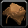

Douze métiers, plus de 900 recettes inédites et un tout nouveau système de camp : les métiers sont l'une des grandes nouveautés de Forever. Présentation de chaque métier, conseils pour bien les choisir et liens vers les meilleurs guides pour les monter de 1 à 300.
On fabrique des objets. Chaque personnage peut avoir deux métiers principaux (artisanat ou récolte).
Potions, élixirs et flacons : le métier des consommables, toujours demandé en donjon comme en raid.
- Dans Forever : 178 recettes, dont 69 nouvelles, plus 30 à la Faveur marchande
- Objet de camp : Puits de mana : régénère du mana pour le groupe
- Va bien avec : Herboristerie
Armes et armures en plaques et en mailles, pierres à aiguiser et lests pour les guerriers et paladins.
- Dans Forever : 437 recettes, dont 197 nouvelles, plus 62 à la Faveur marchande
- Objet de camp : Meule à aiguiser : bonus de Force
- Va bien avec : Minage
Enchantement
Améliore l'équipement de façon permanente. Les composants se récupèrent en désenchantant les objets verts et bleus.
- Dans Forever : 232 formules, dont 69 nouvelles, plus 40 à la Faveur marchande
- Objet de camp : Luth enchanté : armure, caractéristiques et résistances
- Va bien avec : Couture
Explosifs, gadgets, lunettes et objets farfelus : très apprécié en JcJ pour ses bombes et ses gadgets.
- Dans Forever : 241 recettes, dont 76 nouvelles, plus 29 à la Faveur marchande
- Objet de camp : Robot vendeur de composants
- Va bien avec : Minage

Travail du cuir
Armures en cuir et en mailles, et kits d'armure. C'est le métier qui gagne le plus de nouvelles recettes dans Forever.
- Dans Forever : 511 recettes, dont 270 nouvelles, plus 82 à la Faveur marchande
- Objet de camp : Tente du camp : expérience de repos en plus
- Va bien avec : Dépeçage
Couture
Armures en tissu et sacs : idéal pour les mages, prêtres et démonistes. Pas besoin de métier de récolte, le tissu tombe des monstres.
- Dans Forever : 414 recettes, dont 180 nouvelles, plus 68 à la Faveur marchande
- Objet de camp : Bannière de faction : bonus d'Esprit
- Va bien avec : Enchantement
On récupère les matériaux dans la nature : parfaits pour gagner de l'or ou nourrir un métier d'artisanat.
Ils s'ajoutent aux deux métiers principaux : tous les personnages peuvent les apprendre.
Quels métiers choisir ?
Chaque personnage a droit à deux métiers principaux. Les secondaires (cuisine, pêche, secourisme) s'ajoutent gratuitement : prends-les tous, ils servent toujours.
- Pour gagner de l'or en montant de niveau : deux métiers de récolte, par exemple Herboristerie + Minage ou Minage + Dépeçage. Tu revends les matériaux à l'hôtel des ventes.
- Les couples classiques : Alchimie + Herboristerie, Forge + Minage, Ingénierie + Minage, Travail du cuir + Dépeçage, Couture + Enchantement.
- Par type de classe : la Couture va bien aux classes en tissu (mage, prêtre, démoniste), le Travail du cuir aux voleurs, druides, chasseurs et chamans, et la Forge aux guerriers et paladins. L'Ingénierie est très prisée en JcJ.
Astuce : l'avantage d'Héritage
Heures supplémentaires augmente les chances de gagner un point de compétence. Et l'Hôtel des ventes devient bien plus simple avec l'addon
Auctionator.
Chiffres issus du client bêta, susceptibles d'évoluer à la sortie. Les guides s'ouvrent dans un nouvel onglet : FR = en français, EN = en anglais. Tous les guides de Wowhead : wowhead.com/forever/guides/professions.